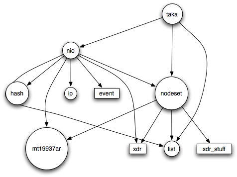

I was off building up a diagram in OmniGraffle that mapped the include
dependency of a project I’m working on. And it didn’t take to long for
me to wonder why I was doing this by hand. OmniGraffle already has a
nice importer for when you are working on Obj-C files, but this project
is plain C. So I pulled something together quick, its not the prettiest
bits of ruby you’ll see. But it will take a bunch of .c or .h
files, and dump out a .dot, which you can then open with OmniGraffle.
By default, it ignores system includes (Files included with
<>), ignores file extensions and grabs all of the .[ch] files
in the current directory. I have it ignore extensions because what I
want to see is the high level conceptual “this block of code needs that
block of code” instead of exactly which file has which file. You can
also specify which included files it should ignore or not ignore. Files
that were specified get circles, others get boxes, giving a nice visual
cue on where that file is.
Calling mapincludes.rb -I event -s sfx on my current project creates a
dot that OmniGraffle turns into:

Which you can then do some cleanup work on. (Cuz as you can see, it needs it.)